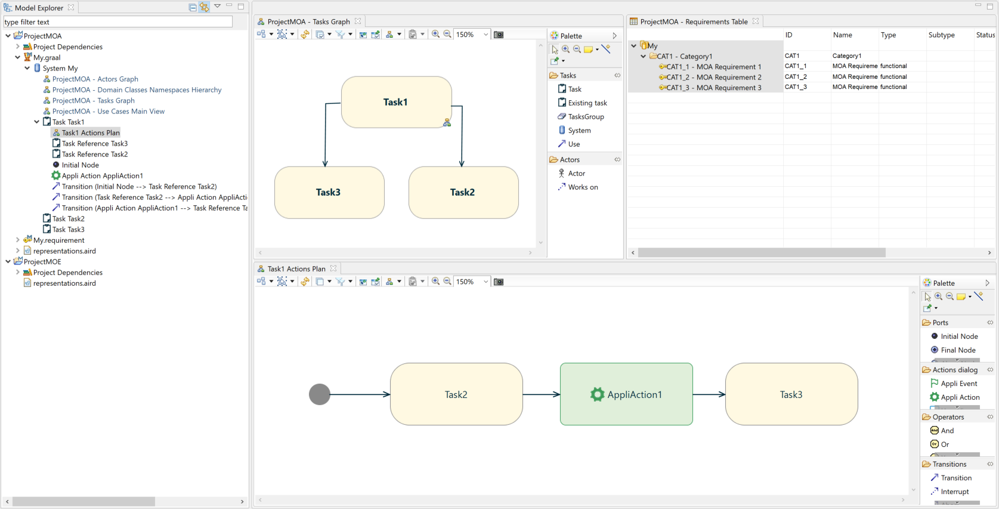
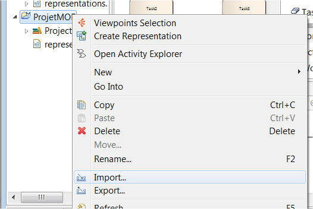
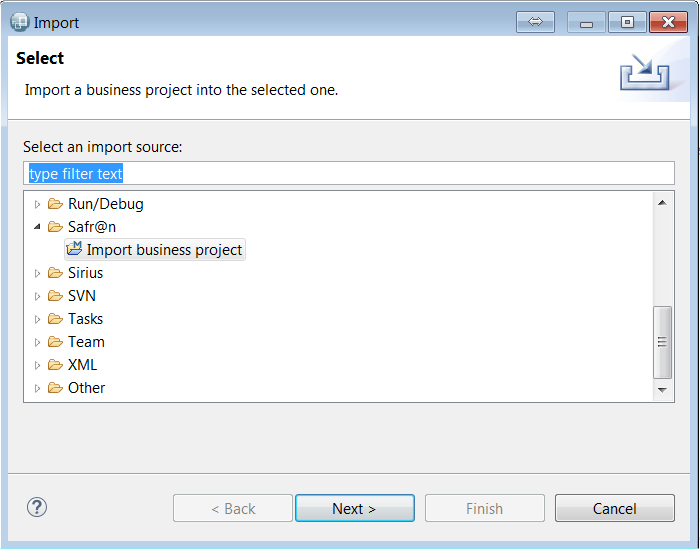
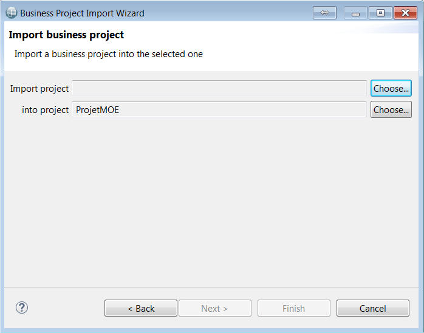
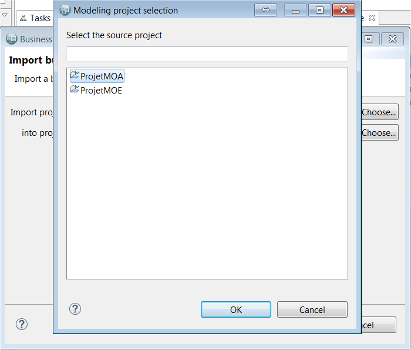
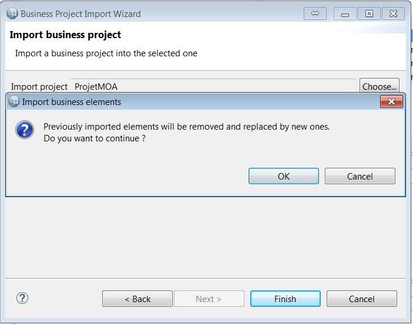
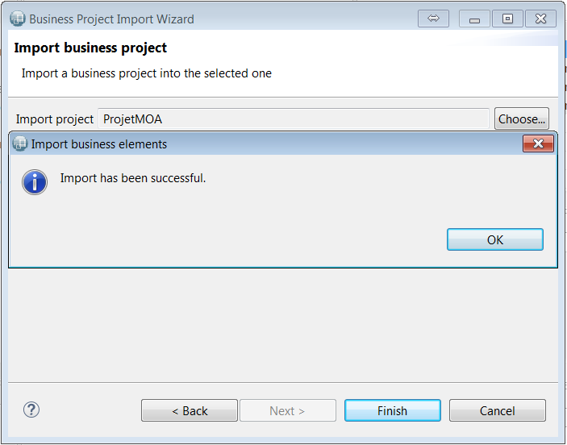
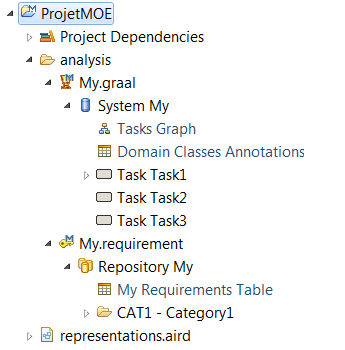
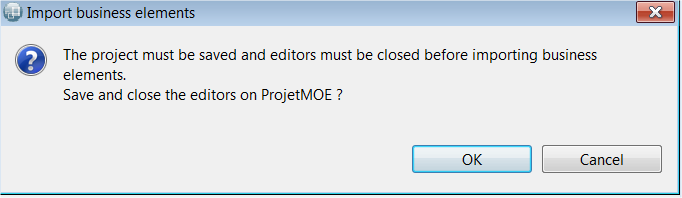
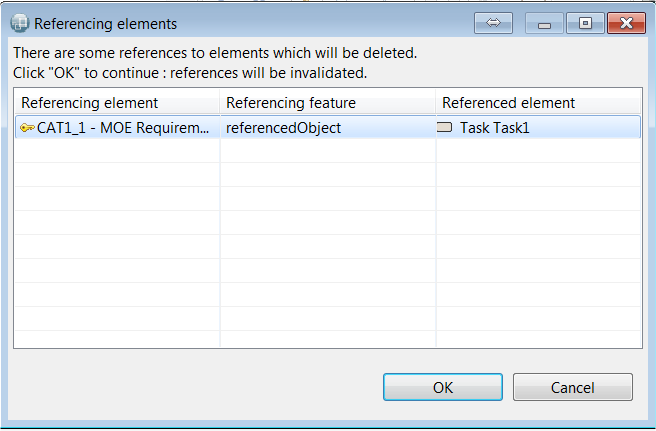

Copyright © 2008, 2026 Obeo - All rights reserved. This program and the accompanying materials are made available under the terms of the Eclipse Public License v2.0
Dans le cadre d’IS Designer, les équipes MOA et MOE travaillent sur des projets différents et des modèles différents.
L'équipe MOE a néanmoins besoin des modèles réalisés par l'équipe MOA pour travailler.
Les cycles de vie des projets MOA et MOE pouvant être décalés, il est intéressant de bénéficier d’une fonctionnalité permettant d’importer le contenu d’un projet MOA dans un projet MOE. Ainsi, l'équipe MOE peut travailler sur une version stable des spécifications.
La fonctionnalité Business project import permet justement d’importer, dans un projet, les modèles réalisés dans un projet MOA. Les modèles qui seront importés sont les modèles de type :
Les modèles MOA sont importés au sein d’un répertoire
analysis créé dans le projet MOE. Les modèles précédemment importés sont écrasés et remplacés par la nouvelle version.
L'équipe MOE n’a pas vocation à modifier les modèles inclus dans le répertoire
analysis. Si des modifications ont été faites, elles seront supprimées au prochain import.
Il existe néanmoins une exception à cette règle : les exigences provenant de l'équipe MOA peuvent être rattachées à des éléments modélisés par l'équipe MOE. L'équipe MOE peut donc ajouter des liens de ces exigences vers ses propres modèles, ces liens seront conservés lors de l’import suivant.
L’exemple suivant utilise un projet MOA contenant un modèle Graal et un modèle Requirement, et un projet MOE encore vide.

Pour lancer l’import métier, ouvrir le menu contextuel d’un projet et sélectionner Import... :

Sélectionner Import business project dans la catégorie IS Designer.

Choisir le projet MOA (
Import project) et le projet MOE (
into project) en utilisant les boutons
Choose....
Quand l’import a été lancé en ayant sélectionné le projet MOE, celui-ci est déjà pré-renseigné dans l’assistant.


Une fois les deux projets spécifiés, cliquer sur
Finish pour lancer l’import.
Un message d’avertissement prévient l’utilisateur que les modèles qu’il avait précédemment importés vont être complètement remplacés par les nouvelles versions. Il est encore possible d’annuler l’import à ce moment.

Un message avertit l’utilisateur que l’import a été correctement réalisé.

Les modèles du projet MOA sont importés dans un répertoire
analysis (modèles
Graal,
Requirement et
Entity).
Les diagrammes sont également importés et les points de vue correspondants sont automatiquement activés sur le projet MOE.

Lancer les imports suivants de la même manière que le premier import.
Pour que l’import s’exécute, le projet MOE doit être sauvegardé et toutes les représentations (diagrammes, tableaux et arbres) doivent être fermées. Si ce n’est pas le cas, un message avertit l’utilisateur que le projet MOE va être sauvegardé et les éditeurs fermés.

Les modèles provenant du projet MOA ne doivent pas être modifiés par l'équipe MOE. La seule exception concerne les exigences qu’il est possible d’associer à des éléments de l'équipe MOE. Ces liens ajoutés seront conservés au prochain import. Dans le cas où des éléments des modèles MOE référencent des éléments des modèles MOA, une boîte de dialogue affiche les références concernées, ces références seront supprimées au moment de l’import. L’utilisateur peut encore annuler l’import à ce moment.
